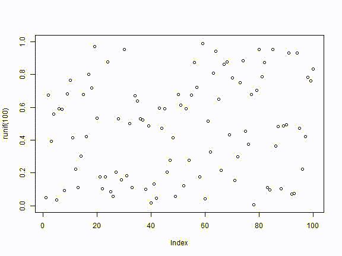

Test & RUN
blogdown 有關 短碼 expand 的測試
跑測試
-
會出錯的地方
AllData<-head(cars,3) -
會產生如下的輸出
```r AllData<-data.frame # 就是說AllData是一個DataFrame AllData #{{< expand title="" incode=false class="" >}} ``` #🏷 {{< bstable table_class="w-50 m-auto" >}} |Subjects |Practice | WPM| |:--------|:--------|---------:| |1 |day1 | 11.348557| |2 |day1 | 15.534179| {{< /bstable >}} -
上面的切除不正確,因為目前的處理(✔️)是切下面的格式
```r AllData<-data.frame # 就是說AllData是一個DataFrame AllData #{{< expand title="" incode=false class="" >}} ``` #🏷 ```r {{< bstable table_class="w-50 m-auto" >}} |Subjects |Practice | WPM| |:--------|:--------|---------:| |1 |day1 | 11.348557| |2 |day1 | 15.534179| {{< /bstable >}} ``` #🏷 ```r #{{< /expand >}} ``` -
原因是,表格的輸出是
asis因為是MD格式的表格。 -
考考目前的程式碼
ohook_chunk <- knitr::knit_hooks$get('chunk') knitr::knit_hooks$set( chunk = function(x, options) { y <- ohook_chunk(x, options) if (isTRUE(options$hugomd)) { # 只有這個狀態才處理 if (isTRUE(options$collapse)) { # 輸出輸出都同一個BLOCK,把凡是```\n```....?lang=R...\n開頭的都殺掉(就是區塊結尾+區塊開頭) r <- "\n([`]{3,})\n+\\1.*?\\?lang=R[^\n]*?\n" y <- gsub(r, "\n", y) } else{ if(grepl("\\{\\{<[\\s]*([\\w]*).*>\\}\\}([\\s\\S]*?)\\{\\{<[\\s]*\\/\\1[\\s]*>\\}\\}",y,perl=T)){ m<-gregexec("\\{\\{<[\\s]*([\\w]*).*>\\}\\}([\\s\\S]*?)\\{\\{<[\\s]*\\/\\1[\\s]*>\\}\\}",y,perl=T) ms<-m[[1]] # ml<-attr(ms,"match.length") size<-dim(ms) for(ncol in size[2]:1){ start<-ms[1,ncol] end<-ms[1,ncol]+ml[1,ncol]-1 ss<-substr(y,start,end) ss<-gsub("\n([`]{3,})[\n]+\\1r?\\?.*?\n","\n",ss,perl=T) #有```開頭的都去掉 #ss<-gsub("[`]{3,}).*?\n","\n",ss,perl=T) #有```開頭的都去掉 y<-paste0(substr(y,1,start-1),ss,substr(y,end+1,nchar(y))) #貼回去 } } } } return(y) } )
上面的測試碼
day1<-rnorm(20, mean = 20, sd = 5)
day2<-rnorm(20, mean = 30, sd = 5)
day3<-rnorm(20, mean = 40, sd = 5)
day1[day1<0]<-0
day2[day2<0]<-0
day3[day3<0]<-0
WPM<-c(day1,day2,day3)
Subjects<-c(seq(1,20), seq(1,20), seq(1,20))
Subjects<-factor(Subjects)
Practice<-c(rep("day1",20), rep("day2",20), rep("day3",20))
AllData<-data.frame(Subjects,Practice,WPM)
ANOVAresults<-aov(WPM~Practice + Error(Subjects/Practice), AllData)
summary(ANOVAresults)
#>
#> Error: Subjects
#> Df Sum Sq Mean Sq F value Pr(>F)
#> Residuals 19 325.1 17.11
#>
#> Error: Subjects:Practice
#> Df Sum Sq Mean Sq F value Pr(>F)
#> Practice 2 3000.9 1500.5 64.04 6.76e-13 ***
#> Residuals 38 890.3 23.4
#> ---
#> Signif. codes: 0 '***' 0.001 '**' 0.01 '*' 0.05 '.' 0.1 ' ' 1
model.tables(ANOVAresults,"means")
#> Tables of means
#> Grand mean
#>
#> 29.89196
#>
#> Practice
#> Practice
#> day1 day2 day3
#> 20.94 30.51 38.23
AllData #
AllData
| Subjects | Practice | WPM |
|---|---|---|
| 1 | day1 | 17.82926 |
| 2 | day1 | 23.78047 |
| 3 | day1 | 23.16225 |
| 4 | day1 | 23.10702 |
| 5 | day1 | 19.87487 |
| 6 | day1 | 19.08618 |
| 7 | day1 | 20.97472 |
| 8 | day1 | 15.99360 |
| 9 | day1 | 17.51705 |
| 10 | day1 | 23.28489 |
| 11 | day1 | 19.61906 |
| 12 | day1 | 25.88358 |
| 13 | day1 | 18.96698 |
| 14 | day1 | 21.94171 |
| 15 | day1 | 20.80779 |
| 16 | day1 | 25.21195 |
| 17 | day1 | 15.80174 |
| 18 | day1 | 23.01589 |
| 19 | day1 | 20.61546 |
| 20 | day1 | 22.28606 |
| 1 | day2 | 43.02797 |
| 2 | day2 | 31.86111 |
| 3 | day2 | 31.99362 |
| 4 | day2 | 24.03791 |
| 5 | day2 | 32.14579 |
| 6 | day2 | 32.88795 |
| 7 | day2 | 25.38206 |
| 8 | day2 | 33.62098 |
| 9 | day2 | 32.34370 |
| 10 | day2 | 27.51076 |
| 11 | day2 | 26.15960 |
| 12 | day2 | 26.57159 |
| 13 | day2 | 32.57362 |
| 14 | day2 | 36.82106 |
| 15 | day2 | 40.34392 |
| 16 | day2 | 23.74566 |
| 17 | day2 | 27.04371 |
| 18 | day2 | 15.37476 |
| 19 | day2 | 27.48419 |
| 20 | day2 | 39.26494 |
figure
for (i in 1:10) plot(runif(100), ylim = c(0, 1)) # for example
